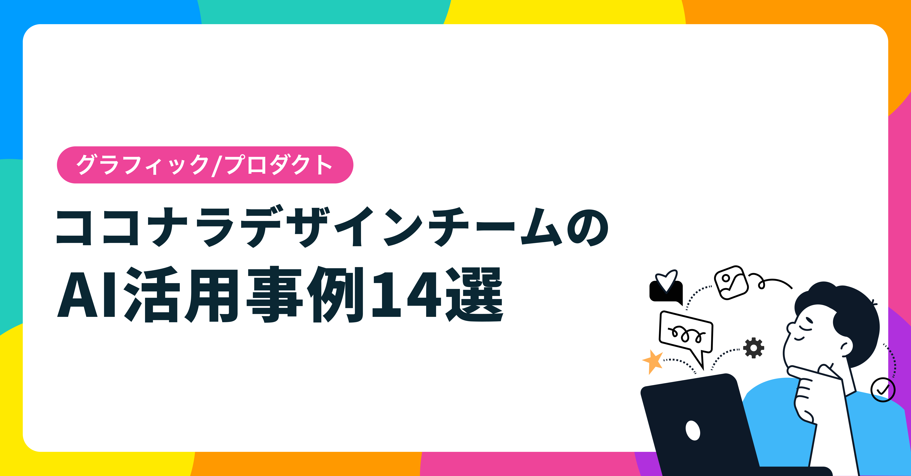

デザインチームの生成AI活用推進PJ

Overview
新卒2年目でAX推進担当に抜擢
- 日頃からAIに関心を持ち社内発信を続けた結果、デザインチームのAX推進コアメンバー3名の1人として抜擢された
「文化づくり」を軸に毎週の共有会・相談会を企画・運営
- ツール導入だけでは定着しないという仮説のもと、チームがAIを試しやすい環境づくりを最優先に推進。半年間、毎週AI共有会・相談会を継続した
先行活用者で業務工数50%削減を達成
- 積極的に活用したメンバーで業務工数50%削減という目標をクリア。効率化で浮いた時間でデータ分析・実装挑戦など、デザイン領域の越境も促進した
Summary
新卒2年目でAX推進を担い、文化づくりから業務効率化50%達成まで牽引
😟 課題
工数50%削減という
高い目標と文化の壁
- デザイン部全体で「業務工数50%削減」というチャレンジングな目標を掲げた
- AIツールを導入しても「試しにくい」「失敗が怖い」という文化的なハードルがあった
- 推進担当3名でデザイナー5名以上を巻き込む必要があった
😊 貢献
自ら発信し
試しやすい文化を醸成
- 業務棚卸しで現状プロセスを可視化し、AI活用の優先領域を定義
- 毎週「AI共有会」「相談会」を企画・運営し、ナレッジ共有の仕組みを構築
- 自らが最も積極的にAIを活用・発信し続け、チームが試しやすい空気を醸成
🌱 結果・学び
50%削減達成と
「文化が9割」の確信
- 先行活用者の業務工数50%削減を達成。note記事53いいね獲得で社外発信も実現
- 効率化で浮いた時間でデータ分析・実装挑戦など、デザイン領域の越境が加速
- AI推進において「ツールより文化づくりが先」という確信を実体験として得た
Approach
01
業務棚卸し
02
解決策の定義
03
啓蒙・文化づくり
課題整理
1. 業務棚卸しで「AIが使える領域」を可視化
現状のデザインプロセスを一覧化し、各業務の工数と性質を整理。リサーチ・テキスト生成・画像加工・コーディングなど領域ごとにAI活用の有効性を評価し、優先的に効率化すべき業務を定義した。
2. ツール導入だけでは定着しないという構造的課題を特定
AIツールを提供するだけでは「試し方がわからない」「失敗が怖い」という心理的ハードルが残ることを認識。「ツールより文化が先」という方針を立て、チームがAIを面白がって試せる環境づくりを推進の中心に据えた。
推進施策
1. 毎週「AI共有会」「相談会」を企画・運営
他社の活用事例や自身のツール検証結果を毎週共有する場を設け、ナレッジが自然に蓄積される仕組みを構築。「相談会」では各メンバーの業務課題にAIを当てはめる実践的なセッションを実施した。継続することでSlackのDesign_AIチャンネルに毎日何かしらの情報が投稿される状態をつくった。
2. 自らが一番楽しんで発信し続けた
率先してAIツールを試し、知見を社内でアウトプットし続けた。自分自身が最も積極的に動くことで「やっていいんだ」という空気をチームに醸成。この取り組みをまとめたnote記事を求められてもいないのに自発的に執筆・公開し、53いいねを獲得。社外へのナレッジ発信も実現した。
■ note記事
半年間の推進活動を振り返り、AI活用シーンや文化づくりの知見を社外に発信。記事はこちら →
成果 & 学び
1. 先行活用者で業務工数50%削減を達成
積極的にAI活用に取り組んだメンバーで業務工数50%削減という目標をクリア。効率化で浮いた時間を使い、データ分析・実装挑戦など、デザインの枠を超えた越境が加速した。
2. 「AI推進は文化づくりが9割」という確信を得た
ツールがどれだけ優れていても、それを面白がって試せる環境とチームの空気がなければ定着しない。まず自分が一番楽しんで発信し続けることが、チーム全体を巻き込む鍵だった。この学びはデザイン推進やチームマネジメントにも通じる普遍的な気づきとして残っている。
3. 活用率のバラツキが残課題 — 誰でも使える仕組みづくりへ
文化の醸成は進んだ一方で、メンバーによってAI活用の深度にバラツキが生じた。「試してみる」段階から「日常業務に定着させる」段階へ移行するには、個々の業務課題に合わせた適切なフォローと、誰でも再現できる仕組みづくりが必要だと実感。次のフェーズでは個別サポートの仕組みと、活用事例のテンプレート化に注力していきたい。